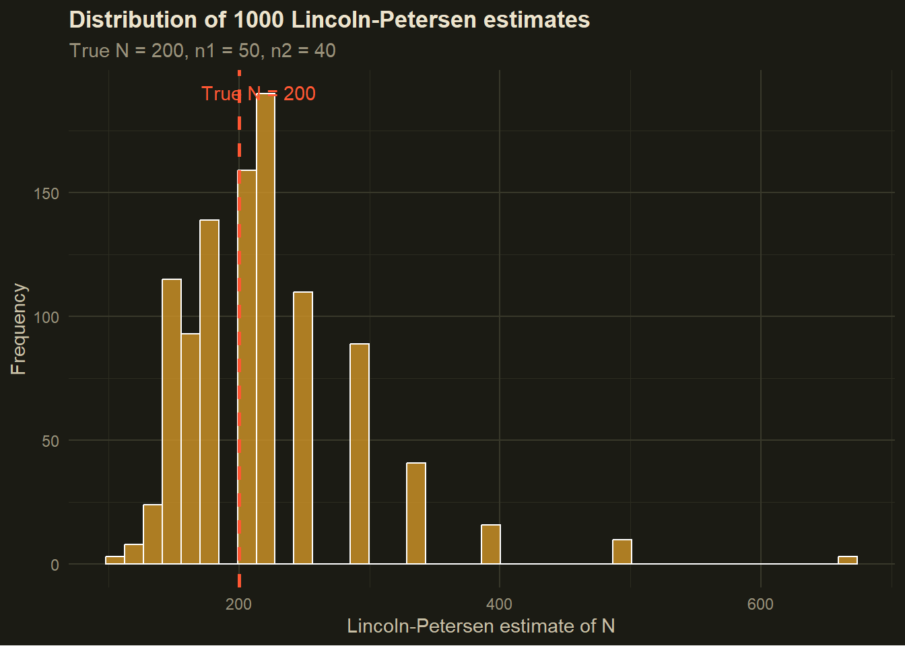

Code
n1 <- 50 # Tagged and released on day 1
n2 <- 40 # Caught on day 2
m2 <- 10 # Already tagged in day 2 sample
N_hat <- (n1 * n2) / m2
N_hat[1] 200Deon Roos
June 6, 2026
On the previous page we established that counting animals gives you a count, not a population size, and that non-detections are ambiguous in at least three different ways. That is a lot of problems to solve at once. So we’re not going to solve them all at once.
The Lincoln-Petersen estimator, developed independently by Frederick Lincoln in 1930 and C.G.J. Petersen in 1896 (Petersen got there first but Lincoln gets equal billing), is the simplest possible mark-recapture method. It uses just two sampling occasions, makes some strong assumptions, and gives you a single number: an estimate of population size \(N\).
It does not estimate survival. It does not deal with temporary emigration. It does not do very much at all, really. But it does the one thing we need it to do right now, which is build the intuition for how recapture data carries information about what you missed.
Imagine you are trying to count those fish in a lake. You cannot drain the lake. You cannot see every fish. What you can do is this:
On day one, you go out and catch as many fish as you can. You tag every single one and throw them back. Let us say you caught and tagged \(n_1 = 50\) fish.
You wait a few days. Long enough for the tagged fish to mix back in with the rest of the population, but not so long that fish are being born or dying in meaningful numbers. Then you go out again.
On day two, you catch another sample of fish. This time you count two things: the total number caught (\(n_2\)), and how many of those already have tags (\(m_2\), for “marked in second sample”). Let us say \(n_2 = 40\) and \(m_2 = 10\).
Now think about what that recapture rate is telling you. You tagged 50 fish and released them into the population. When you came back, 10 out of 40 fish you caught were tagged. So roughly \(\frac{10}{40} = 25\%\) of the fish you encountered on day two were tagged.
If 25% of the fish you saw on day two were tagged, and you tagged 50 fish total, then those 50 tagged fish represent about 25% of the whole population. Which means:
\[\hat{N} = \frac{50}{0.25} = 200 \text{ fish}\]
That is the Lincoln-Petersen estimator. The tagged fish are like a dye injected into the population. How diluted the dye appears in your second sample tells you how large the container must be.
More formally, the estimator is:
\[\hat{N} = \frac{n_1 \times n_2}{m_2}\]
where:
\(n_1\) is the number caught and marked on the first occasion
\(n_2\) is the number caught on the second occasion
\(m_2\) is the number in the second sample that were already marked
\(\hat{N}\) is our estimate of total population size
Plugging in our numbers:
\[\hat{N} = \frac{50 \times 40}{10} = 200\]
Let us verify this in R:
[1] 200200 fish. Done. Well, almost done. We should talk about uncertainty, because a single number without any sense of how much to trust it is only half the story.
It is worth understanding why this equation works, rather than just accepting it as a formula to plug numbers into. The logic comes from setting up a simple proportion.
If the tagged fish have mixed evenly back into the population, then the proportion of tagged fish in the population should equal the proportion of tagged fish in our second sample:
\[\frac{n_1}{N} = \frac{m_2}{n_2}\]
The left side is: out of the whole population \(N\), the fraction that are tagged is \(\frac{n_1}{N}\).
The right side is: out of the fish we caught on day two, the fraction that were tagged is \(\frac{m_2}{n_2}\).
If mixing was thorough, these two proportions should be equal. Rearranging to solve for \(N\):
\[N = \frac{n_1 \times n_2}{m_2}\]
Which is the LP estimator. It is just cross-multiplication. The whole thing rests on one core assumption: that tagged animals are as likely to be caught as untagged ones, and that both groups are equally distributed throughout the population when you do your second sample.
We should not just report \(\hat{N} = 200\) and leave it there. That estimate comes from a sample, and samples have variability. If we went out and repeated this exercise tomorrow, we would likely get a slightly different number of recaptures, and therefore a slightly different estimate of \(N\).
A commonly used approximation for the variance of the Lincoln-Petersen estimator is:
\[\widehat{Var}(\hat{N}) = \frac{n_1^2 \times n_2 \times (n_2 - m_2)}{m_2^3}\]
From which we can get a standard error and approximate 95% confidence interval:
Estimate: 200
SE: 54.8
95% CI: 93 to 307So our estimate is 200 fish, but with a confidence interval that is fairly wide - somewhere between 90 to 300 fish. That width reflects the reality that our estimate is based on catching just 10 recaptures. Ten is not very many. The fewer recaptures you get, the less precise your estimate.
This is an important practical point for study design. If you want a precise estimate of \(N\), you need to tag a lot of animals and/or have high enough detection probability to generate a decent number of recaptures. We will come back to this idea when we think about designing robust design studies.
Use the calculator below to explore this directly. The defaults match the worked example above. Try reducing \(m_2\) — the number of recaptures — and watch what happens to the confidence interval. Then try increasing \(n_1\) and \(n_2\) while keeping the recapture rate (\(m_2 / n_2\)) constant, and see whether that helps.
{
const m2_max = Math.min(lp_n1, lp_n2);
if (lp_m2 > m2_max) {
return html`<div style="background:#3a1a1a;border:1px solid #FF5733;border-radius:8px;padding:14px;color:#FF5733;font-size:13px">
m₂ cannot exceed min(n₁, n₂) = ${m2_max}. You cannot recapture more animals than were either tagged or caught in the second sample.
</div>`;
}
const N_hat = (lp_n1 * lp_n2) / lp_m2;
const var_N = (lp_n1 ** 2 * lp_n2 * (lp_n2 - lp_m2)) / lp_m2 ** 3;
const se_N = Math.sqrt(Math.max(var_N, 0));
const ci_lo = Math.max(0, N_hat - 1.96 * se_N);
const ci_hi = N_hat + 1.96 * se_N;
const ci_width = ci_hi - ci_lo;
const recap_pct = ((lp_m2 / lp_n2) * 100).toFixed(1);
const xMax = ci_hi * 1.15;
const xDom = [0, xMax];
const ciData = [{x: ci_lo, y: 0}, {x: ci_hi, y: 0}];
const hatData = [{x: N_hat, y: 0}];
const chart = Plot.plot({
style: { background: "#202123", color: "#cccccc", fontSize: "13px" },
width: 520,
height: 72,
marginTop: 18,
marginBottom: 28,
marginLeft: 12,
marginRight: 12,
x: { label: "Population size", domain: xDom },
y: { axis: null, domain: [-0.6, 0.6] },
marks: [
Plot.line(ciData, { x: "x", y: "y", stroke: "#00A68A", strokeWidth: 5 }),
Plot.dot(ciData, { x: "x", y: "y", fill: "#00A68A", r: 5 }),
Plot.dot(hatData, { x: "x", y: "y", fill: "#ffffff", r: 7,
stroke: "#00A68A", strokeWidth: 2.5 })
]
});
return html`<div style="background:#202123;border-radius:8px;padding:16px;font-family:sans-serif">
<div style="display:grid;grid-template-columns:repeat(3,1fr);gap:10px;margin-bottom:14px">
<div style="background:#1a2a1a;border:1px solid #00A68A;border-radius:6px;padding:12px;text-align:center">
<div style="font-size:11px;color:#999;margin-bottom:4px">Population estimate (N̂)</div>
<div style="font-size:28px;font-weight:bold;color:#00A68A">${Math.round(N_hat).toLocaleString()}</div>
</div>
<div style="background:#252525;border:1px solid #444;border-radius:6px;padding:12px;text-align:center">
<div style="font-size:11px;color:#999;margin-bottom:4px">Standard error</div>
<div style="font-size:22px;color:#cccccc">± ${Math.round(se_N).toLocaleString()}</div>
</div>
<div style="background:#252525;border:1px solid #444;border-radius:6px;padding:12px;text-align:center">
<div style="font-size:11px;color:#999;margin-bottom:4px">Recapture rate</div>
<div style="font-size:22px;color:#cccccc">${recap_pct}%</div>
</div>
</div>
${chart}
<p style="font-size:12px;color:#666;margin:4px 0 0;text-align:center">
95% CI: ${Math.round(ci_lo).toLocaleString()} to ${Math.round(ci_hi).toLocaleString()}
· width: ${Math.round(ci_width).toLocaleString()}
</p>
</div>`;
}Rather than just working through one example, it is informative to see what happens when we repeat the Lincoln-Petersen procedure many times on the same population. This gives us a sense of how variable the estimator is across different samples from the same true population.
library(ggplot2)
set.seed(1234)
N_true <- 200
n1 <- 50
n2 <- 40
n_sims <- 1000
lp_estimates <- replicate(n_sims, {
# Each fish in the population is tagged or not
tagged <- c(rep(1, n1), rep(0, N_true - n1))
# Sample n2 fish on day 2, without replacement
second_sample <- sample(tagged, size = n2, replace = FALSE)
m2_sim <- sum(second_sample)
# Avoid division by zero in rare cases
if (m2_sim == 0) return(NA)
(n1 * n2) / m2_sim
})
lp_df <- data.frame(N_hat = lp_estimates[!is.na(lp_estimates)])
ggplot(lp_df, aes(x = N_hat)) +
geom_histogram(fill = "#00A68A", colour = "white", bins = 40, alpha = 0.8) +
geom_vline(xintercept = N_true, linetype = "dashed",
colour = "#FF5733", linewidth = 1) +
annotate("text", x = N_true + 15, y = Inf, vjust = 2,
label = "True N = 200", colour = "#FF5733") +
labs(
x = "Lincoln-Petersen estimate of N",
y = "Frequency",
title = paste0("Distribution of ", n_sims, " Lincoln-Petersen estimates"),
subtitle = "True N = 200, n1 = 50, n2 = 40"
) +
theme_dark_site()
A few things worth noticing here. First, the distribution of estimates is centred roughly around the true value of 200, which is reassuring. The estimator is not systematically wrong. Second, the distribution has a long right tail, meaning we occasionally get wildly large estimates. This happens when \(m_2\) is small by chance; if you only recapture 2 or 3 tagged fish, the formula spits out a very large \(\hat{N}\). This is one reason the estimator works poorly when recaptures are rare.
The Lincoln-Petersen estimator rests on four assumptions. Violating any of them will bias your estimate, sometimes badly.
1. The population is closed. No births, deaths, immigration, or emigration between your two sampling occasions. If animals are entering or leaving the population between day one and day two, your estimate of \(N\) refers to something that does not exist at any single point in time.
2. All animals have an equal probability of being captured. If some animals are shyer than others, or if tagged animals learn to avoid traps, then the recapture rate in your second sample is not representative of the whole population and your estimate is biased.
3. Marking does not affect survival or behaviour. If a tag stresses the animal and increases mortality, or changes how it moves, the whole logic falls apart.
4. Marks are not lost and are always correctly identified. If tags fall off, or if you misread a tag number, then animals that should count as recaptures will be counted as new captures instead, inflating your estimate of \(N\).
In practice, none of these assumptions will be perfectly met. The question is always whether they are met well enough that your estimate is useful.
The closure assumption is the one we are going to think about most carefully throughout this stats explainer website thing. It is both the most important and the most interesting, because as we will see, the robust design is essentially an elegant solution to the problem of what to do when you need closure for some purposes and openness for others.
For all its simplicity, the Lincoln-Petersen estimator has a short list of things it simply cannot provide.
It gives you a snapshot of \(N\) at one point in time. It says nothing about whether \(N\) is increasing or decreasing. It says nothing about survival. It cannot distinguish between a population that is stable and one that is rapidly declining but happens to be large right now.
It also requires closure, which is only defensible over very short time windows. If your study spans weeks or months, animals will be born and die, and the assumption of a fixed, closed population becomes increasingly heroic.
And critically, with only two sampling occasions, you have very limited ability to estimate detection probability reliably. If \(m_2\) happens to be low because you had a bad day of sampling rather than because detection probability is genuinely low, you will overestimate \(N\).
These limitations are not reasons to dismiss the Lincoln-Petersen estimator. They are reasons to understand it as a starting point. The models that follow in subsequent pages are, in various ways, responses to exactly these limitations.
The Lincoln-Petersen estimator gives us \(\hat{N}\) under closure. But to get survival probability \(\phi\) as well, we need to allow the population to be open between occasions, meaning animals can die between sampling events. And to get both \(\hat{N}\) and \(\phi\) at the same time, we need to be more clever about how we structure our sampling.
That cleverness is the Cormack-Jolly-Seber model, which is next.